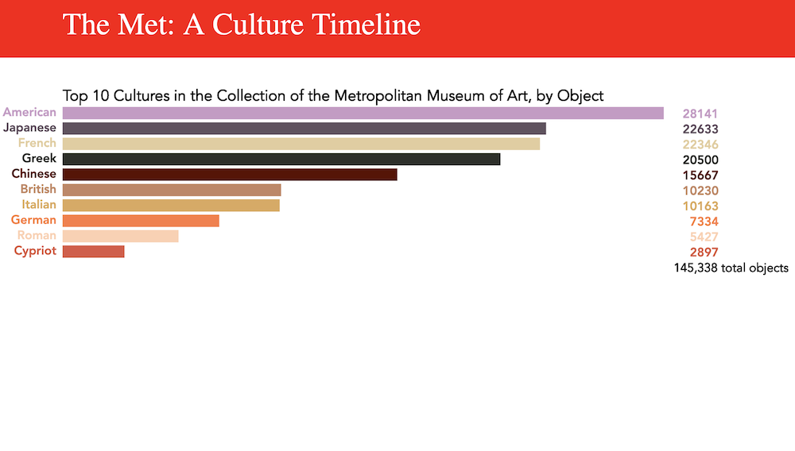

Turning Japanese
As we enter the Asian century, "Turning Japanese" investigates how Japan became a cultural giant by tracing the journey of Japanese loanwords into English through the Oxford English Dictionary, New York Times and Google Search. (JavaScript, D3, Vue)
View project
Fender vs Gibson: The Great Guitar Debate

An interactive data visualization that explores the Fender-Gibson guitar brand rivalry. Based on the
Metropolitan Museum of Art's "Play It Loud" exhibition. (JavaScript, p5, jQuery)
View project
Asian America

Asian American population growth and distribution (JavaScript, D3)
View project
NTV Facebook Dashboard

An interactive dashboard analyzing news video distribution by topic, built for Japan's leading private TV network. (p5, jQuery)
View project
Japan's Deadliest Earthquakes

Japan's deadliest earthquakes 1900-present vs. monthly global quakes. (p5, Leaflet) I lived in Japan during the M9 2011 earthquake, tsunami and nuclear disaster, and created this visualization to contextualize my experience.
View project
Metropolitan Museum of Art: A Culture Timeline

A data-driven look at the rise and fall of civilizations over time in the Met's collection. (JavaScript, p5)
View video
New York Times Article

The artistic response to Japan's 2011 Fukushima nuclear disaster.
View article
Rolling Stone Photo Essay

Featuring the work of Japanese photographer Koh Hasebe and interviews with David Byrne, Steven Tyler and Andy Summers.
View article
Japan Times Article

Analyzing Google data to understand changing perceptions of Japan. (Ngram Viewer, Google Trends)
View article
Why Cape Cod’s beaches are in trouble

Cape Cod’s famous beaches face unintended consequence after the 1972 Marine Mammal Protection Act results in the return of seals and sharks. (After Effects, Premier)
View video